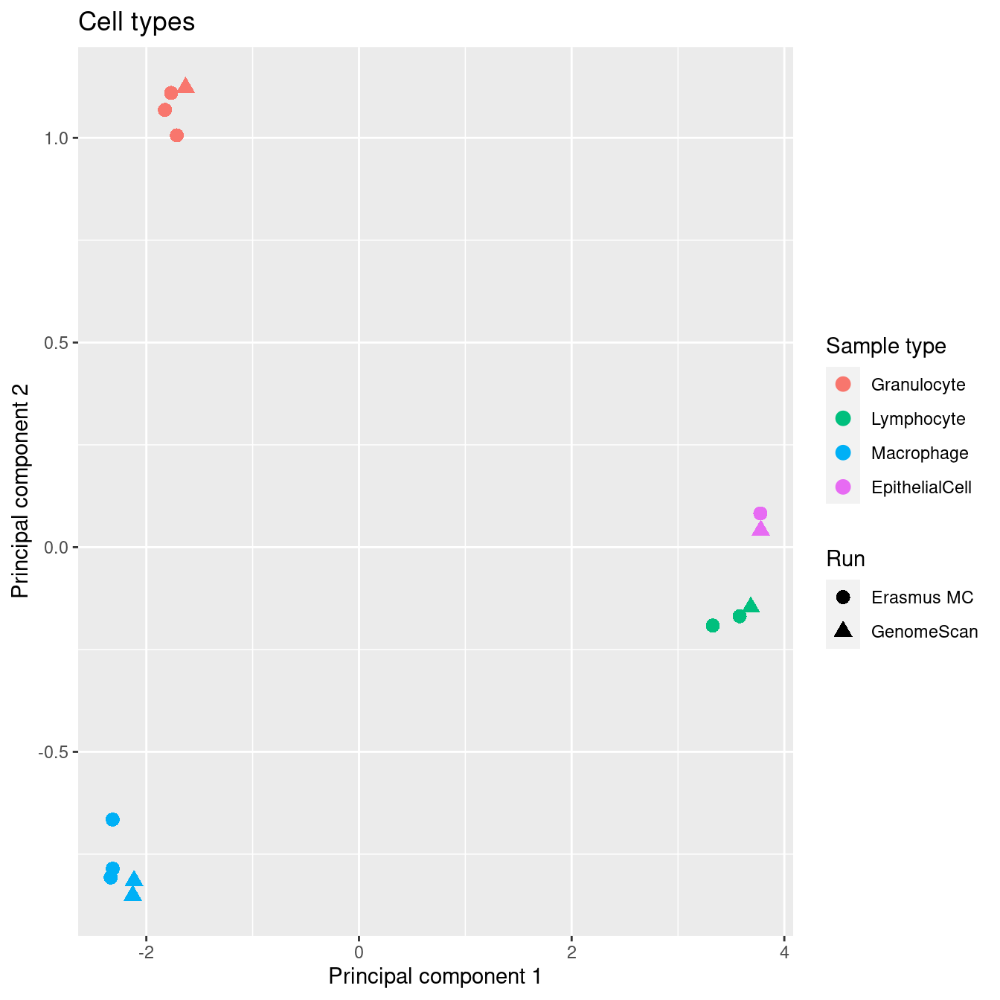
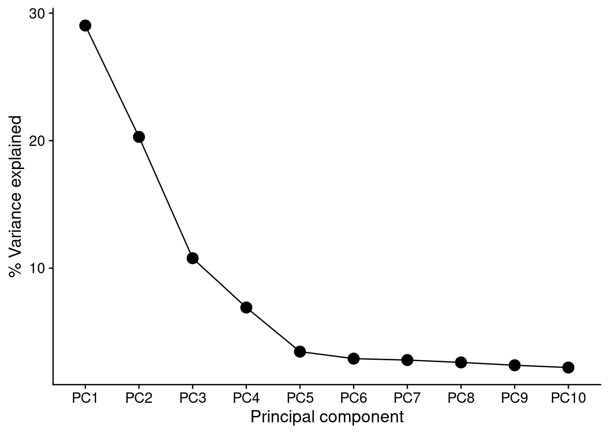

Last updated: 2021-09-28
Checks: 7 0
Knit directory: paed-BAL-meth-ref/
This reproducible R Markdown analysis was created with workflowr (version 1.6.2). The Checks tab describes the reproducibility checks that were applied when the results were created. The Past versions tab lists the development history.
Great! Since the R Markdown file has been committed to the Git repository, you know the exact version of the code that produced these results.
Great job! The global environment was empty. Objects defined in the global environment can affect the analysis in your R Markdown file in unknown ways. For reproduciblity it’s best to always run the code in an empty environment.
The command set.seed(20210927) was run prior to running the code in the R Markdown file. Setting a seed ensures that any results that rely on randomness, e.g. subsampling or permutations, are reproducible.
Great job! Recording the operating system, R version, and package versions is critical for reproducibility.
Nice! There were no cached chunks for this analysis, so you can be confident that you successfully produced the results during this run.
Great job! Using relative paths to the files within your workflowr project makes it easier to run your code on other machines.
Great! You are using Git for version control. Tracking code development and connecting the code version to the results is critical for reproducibility.
The results in this page were generated with repository version e968190. See the Past versions tab to see a history of the changes made to the R Markdown and HTML files.
Note that you need to be careful to ensure that all relevant files for the analysis have been committed to Git prior to generating the results (you can use wflow_publish or wflow_git_commit). workflowr only checks the R Markdown file, but you know if there are other scripts or data files that it depends on. Below is the status of the Git repository when the results were generated:
Ignored files:
Ignored: .Rhistory
Ignored: .Rproj.user/
Ignored: code/deident.R
Ignored: data/idat/
Unstaged changes:
Modified: .gitignore
Note that any generated files, e.g. HTML, png, CSS, etc., are not included in this status report because it is ok for generated content to have uncommitted changes.
These are the previous versions of the repository in which changes were made to the R Markdown (analysis/dataPreprocess.Rmd) and HTML (docs/dataPreprocess.html) files. If you’ve configured a remote Git repository (see ?wflow_git_remote), click on the hyperlinks in the table below to view the files as they were in that past version.
| File | Version | Author | Date | Message |
|---|---|---|---|---|
| Rmd | e968190 | Jovana Maksimovic | 2021-09-28 | wflow_publish(c(“analysis/dataPreprocess.Rmd”, “analysis/estimateCellProportions.Rmd”)) |
| html | 10147c0 | Jovana Maksimovic | 2021-09-27 | Build site. |
| Rmd | 1114da3 | Jovana Maksimovic | 2021-09-27 | wflow_publish(c(“analysis/index.Rmd”, “analysis/dataPreprocess.Rmd”, |
Load all the packages required for analysis.
library(here)
library(workflowr)
library(limma)
library(minfi)
library(missMethyl)
library(matrixStats)
library(minfiData)
library(stringr)
library(IlluminaHumanMethylationEPICanno.ilm10b4.hg19)
library(IlluminaHumanMethylationEPICmanifest)
library(tidyverse)
library(ggplot2)
library(patchwork)
library(glue)Load the EPIC array annotation data that describes the genomic context of each of the probes on the array.
# Get the EPICarray annotation data
annEPIC <- getAnnotation(IlluminaHumanMethylationEPICanno.ilm10b4.hg19)
annEPIC %>% data.frame %>%
dplyr::select("chr",
"pos",
"strand",
"UCSC_RefGene_Name",
"UCSC_RefGene_Group") %>%
head() %>% knitr::kable()| chr | pos | strand | UCSC_RefGene_Name | UCSC_RefGene_Group | |
|---|---|---|---|---|---|
| cg18478105 | chr20 | 61847650 | - | YTHDF1 | TSS200 |
| cg09835024 | chrX | 24072640 | - | EIF2S3 | TSS1500 |
| cg14361672 | chr9 | 131463936 | + | PKN3 | TSS1500 |
| cg01763666 | chr17 | 80159506 | + | CCDC57 | Body |
| cg12950382 | chr14 | 105176736 | + | INF2;INF2 | Body;Body |
| cg02115394 | chr13 | 115000168 | + | CDC16;CDC16 | TSS200;TSS200 |
Read the sample information and IDAT file paths into R.
# absolute path to the directory where the data is (relative to the Rstudio project)
dataDirectory <- here("data")
# read in the sample sheet for the experiment
read.metharray.sheet(dataDirectory,
pattern = "Samplesheet_BAL_reference.csv") %>%
mutate(Basename = gsub("c(\"","", Basename, fixed=TRUE)) %>%
mutate(Sample_ID = paste(Slide, Array, sep = "_")) %>%
mutate_if(is.character, stringr::str_replace_all, pattern = "Granuloycte",
replacement = "Granulocyte") %>%
mutate_if(is.character, stringr::str_replace_all, pattern = "Epithelialcell",
replacement = "EpithelialCell") %>%
mutate_if(is.character, stringr::str_replace_all, pattern = "Old",
replacement = "Erasmus MC") %>%
mutate_if(is.character, stringr::str_replace_all, pattern = "New",
replacement = "GenomeScan") %>%
dplyr::select(Sample_ID, Sample_Group, Sample_source, Sample_run,
Basename) -> targets[1] "/oshlack_lab/jovana.maksimovic/projects/MCRI/shivanthan.shanthikumar/paed-BAL-meth-ref/data/Samplesheet_BAL_reference.csv"targets %>% dplyr::select(-Basename) %>% knitr::kable()| Sample_ID | Sample_Group | Sample_source | Sample_run |
|---|---|---|---|
| 202905570075_R02C01 | EpithelialCell | A1 | Erasmus MC |
| 202900540047_R01C01 | Macrophage | M1 | Erasmus MC |
| 202900540047_R02C01 | Macrophage | M2 | Erasmus MC |
| 202900540047_R03C01 | Macrophage | M3 | Erasmus MC |
| 202900540047_R04C01 | Granulocyte | G1 | Erasmus MC |
| 202900540047_R05C01 | Granulocyte | G2 | Erasmus MC |
| 202900540047_R06C01 | Granulocyte | G3 | Erasmus MC |
| 202900540047_R07C01 | Lymphocyte | L1 | Erasmus MC |
| 202900540047_R08C01 | Lymphocyte | L2 | Erasmus MC |
| 204071680134_R04C01 | Macrophage | M1 | GenomeScan |
| 204071680134_R05C01 | Macrophage | M2 | GenomeScan |
| 204071680134_R06C01 | Granulocyte | G1 | GenomeScan |
| 204071680134_R07C01 | Lymphocyte | L1 | GenomeScan |
| 204071680134_R08C01 | EpithelialCell | AEC1 | GenomeScan |
| 204074230020_R01C01 | Raw | CF4 | GenomeScan |
| 204074230020_R02C01 | Raw | CF1 | GenomeScan |
| 204074230020_R03C01 | Raw | CF3 | GenomeScan |
| 204074230020_R04C01 | Raw | CF2 | GenomeScan |
| 204074230020_R05C01 | Raw | CF5 | GenomeScan |
| 204074230020_R06C01 | Raw | CTRL | GenomeScan |
Read in the raw methylation data.
# read in the raw data from the IDAT files
rgSet <- read.metharray.exp(targets = targets)Warning in readChar(con, nchars = n): truncating string with embedded nuls
Warning in readChar(con, nchars = n): truncating string with embedded nuls
Warning in readChar(con, nchars = n): truncating string with embedded nuls
Warning in readChar(con, nchars = n): truncating string with embedded nuls
Warning in readChar(con, nchars = n): truncating string with embedded nuls
Warning in readChar(con, nchars = n): truncating string with embedded nuls
Warning in readChar(con, nchars = n): truncating string with embedded nuls
Warning in readChar(con, nchars = n): truncating string with embedded nuls
Warning in readChar(con, nchars = n): truncating string with embedded nuls
Warning in readChar(con, nchars = n): truncating string with embedded nuls
Warning in readChar(con, nchars = n): truncating string with embedded nuls
Warning in readChar(con, nchars = n): truncating string with embedded nuls
Warning in readChar(con, nchars = n): truncating string with embedded nuls
Warning in readChar(con, nchars = n): truncating string with embedded nuls
Warning in readChar(con, nchars = n): truncating string with embedded nuls
Warning in readChar(con, nchars = n): truncating string with embedded nuls
Warning in readChar(con, nchars = n): truncating string with embedded nuls
Warning in readChar(con, nchars = n): truncating string with embedded nuls
Warning in readChar(con, nchars = n): truncating string with embedded nuls
Warning in readChar(con, nchars = n): truncating string with embedded nuls
Warning in readChar(con, nchars = n): truncating string with embedded nuls
Warning in readChar(con, nchars = n): truncating string with embedded nuls
Warning in readChar(con, nchars = n): truncating string with embedded nuls
Warning in readChar(con, nchars = n): truncating string with embedded nuls
Warning in readChar(con, nchars = n): truncating string with embedded nuls
Warning in readChar(con, nchars = n): truncating string with embedded nuls
Warning in readChar(con, nchars = n): truncating string with embedded nuls
Warning in readChar(con, nchars = n): truncating string with embedded nuls
Warning in readChar(con, nchars = n): truncating string with embedded nuls
Warning in readChar(con, nchars = n): truncating string with embedded nuls
Warning in readChar(con, nchars = n): truncating string with embedded nuls
Warning in readChar(con, nchars = n): truncating string with embedded nuls
Warning in readChar(con, nchars = n): truncating string with embedded nuls
Warning in readChar(con, nchars = n): truncating string with embedded nuls
Warning in readChar(con, nchars = n): truncating string with embedded nuls
Warning in readChar(con, nchars = n): truncating string with embedded nuls
Warning in readChar(con, nchars = n): truncating string with embedded nuls
Warning in readChar(con, nchars = n): truncating string with embedded nuls
Warning in readChar(con, nchars = n): truncating string with embedded nuls
Warning in readChar(con, nchars = n): truncating string with embedded nulsrgSetclass: RGChannelSet
dim: 1051815 20
metadata(0):
assays(2): Green Red
rownames(1051815): 1600101 1600111 ... 99810990 99810992
rowData names(0):
colnames(20): 202905570075_R02C01 202900540047_R01C01 ...
204074230020_R05C01 204074230020_R06C01
colData names(6): Sample_ID Sample_Group ... Basename filenames
Annotation
array: IlluminaHumanMethylationEPIC
annotation: ilm10b4.hg19Calculate the detection P-values for each probe so that we can check for any failed samples.
# calculate the detection p-values
detP <- detectionP(rgSet)
head(detP[, 1:5]) %>% knitr::kable()| 202905570075_R02C01 | 202900540047_R01C01 | 202900540047_R02C01 | 202900540047_R03C01 | 202900540047_R04C01 | |
|---|---|---|---|---|---|
| cg18478105 | 0 | 0 | 0 | 0 | 0 |
| cg09835024 | 0 | 0 | 0 | 0 | 0 |
| cg14361672 | 0 | 0 | 0 | 0 | 0 |
| cg01763666 | 0 | 0 | 0 | 0 | 0 |
| cg12950382 | 0 | 0 | 0 | 0 | 0 |
| cg02115394 | 0 | 0 | 0 | 0 | 0 |
We can see the mean detection p-values across all the samples for the two runs.
dat <- reshape2::melt(colMeans(detP))
dat$type <- targets$Sample_Group
dat$sample <- targets$Sample_source
dat$run <- targets$Sample_run
pal <- scales::hue_pal()(length(unique(targets$Sample_Group)))
names(pal) <- c("Granulocyte","Raw","Lymphocyte",
"Macrophage","EpithelialCell")
# examine mean detection p-values across all samples to identify failed samples
p <- ggplot(dat, aes(x = sample, y = value, fill = type)) +
geom_bar(stat = "identity") +
facet_wrap(vars(run), ncol = 2, scales = "free_x") +
labs(x = "Sample", y = "Detection p-value", fill = "Sample type") +
theme(axis.text.y = element_text(size = 7),
axis.text.x = element_text(angle = 45, hjust = 1),
legend.position = "bottom") +
scale_fill_manual(values = pal)
p
| Version | Author | Date |
|---|---|---|
| 10147c0 | Jovana Maksimovic | 2021-09-27 |
Filter out samples with mean detection p-values > 0.01 to avoid filtering out too many probes downstream.
keep <- colMeans(detP) < 0.01
table(keep)keep
TRUE
20 rgSet <- rgSet[, keep]
targets <- targets[keep, ]
detP <- detP[, keep]Normalise the data.
# normalize the data; this results in a GenomicRatioSet object
mSetSq <- preprocessQuantile(rgSet)[preprocessQuantile] Mapping to genome.[preprocessQuantile] Fixing outliers.[preprocessQuantile] Quantile normalizing.mSetSqclass: GenomicRatioSet
dim: 865859 20
metadata(0):
assays(2): M CN
rownames(865859): cg14817997 cg26928153 ... cg07587934 cg16855331
rowData names(0):
colnames(20): 202905570075_R02C01 202900540047_R01C01 ...
204074230020_R05C01 204074230020_R06C01
colData names(9): Sample_ID Sample_Group ... yMed predictedSex
Annotation
array: IlluminaHumanMethylationEPIC
annotation: ilm10b4.hg19
Preprocessing
Method: Raw (no normalization or bg correction)
minfi version: 1.36.0
Manifest version: 0.3.0# create a MethylSet object from the raw data for plotting
mSetRaw <- preprocessRaw(rgSet)bSq <- getBeta(mSetSq)
bRaw <- getBeta(mSetRaw)
sq <- reshape2::melt(bSq)
sq$type <- targets$Sample_Group
sq$process <- "Normalised"
raw <- reshape2::melt(bRaw)
raw$type <- targets$Sample_Group
raw$process <- "Raw"
dat <- bind_rows(sq, raw)
colnames(dat)[1:3] <- c("cpg", "ID", "beta")
ggplot(data = dat,
aes(x = beta, colour = type)) +
geom_density(show.legend = NA) +
labs(colour = "Sample type") +
facet_wrap(vars(process), ncol = 2) +
scale_color_manual(values = pal)Warning: Removed 270 rows containing non-finite values (stat_density).
| Version | Author | Date |
|---|---|---|
| 10147c0 | Jovana Maksimovic | 2021-09-27 |
Explore the data to look for any structure. As expected, sex is the most significant source of variation. The patient samples, in particular, are clearly grouping by sex.
mDat <- getM(mSetSq)
mds <- plotMDS(mDat, top = 1000, gene.selection="common", plot = FALSE)
dat <- tibble(x = mds$x,
y = mds$y,
sample = targets$Sample_Group,
run = targets$Sample_run,
source = targets$Sample_source,
sex = targets$Sex)
p1 <- ggplot(dat, aes(x = x, y = y, colour = sample)) +
geom_point(aes(shape = run), size = 3) +
labs(colour = "Sample type", shape = "Run",
x = "Principal component 1",
y = "Principal component 2") +
ggtitle("All data") +
scale_color_manual(values = pal)
p1
| Version | Author | Date |
|---|---|---|
| 10147c0 | Jovana Maksimovic | 2021-09-27 |
Colour ONLY the sorted cells samples using different variables. Encouragingly, the cell types cluster tightly when samples from both runs are combined, indicating that differences between cell types are more significant than any bath effects between the two runs. The cell types also cluster as expected for each of the individual runs.
cells <- !(targets$Sample_Group %in% c("Raw"))
mds <- plotMDS(mDat[, cells], top = 1000, gene.selection="common", plot = FALSE)
dat <- tibble(x = mds$x,
y = mds$y,
sample = targets$Sample_Group[cells],
run = targets$Sample_run[cells],
source = targets$Sample_source[cells])
p1 <- ggplot(dat, aes(x = x, y = y, colour = sample)) +
geom_point(aes(shape = run), size = 3) +
labs(colour = "Sample type", shape = "Run",
x = "Principal component 1",
y = "Principal component 2") +
ggtitle("Cell types") +
scale_color_manual(values = pal[-2])
p1
| Version | Author | Date |
|---|---|---|
| 10147c0 | Jovana Maksimovic | 2021-09-27 |
Filter out poor performing probes, sex chromosome probes, SNP probes and cross reactive probes.
# ensure probes are in the same order in the mSetSq and detP objects
detP <- detP[match(featureNames(mSetSq), rownames(detP)),]
# remove any probes that have failed in one or more samples
keep <- rowSums(detP < 0.01) == ncol(mSetSq)
# subset data
mSetSqFlt <- mSetSq[keep,]
mSetSqFltclass: GenomicRatioSet
dim: 862448 20
metadata(0):
assays(2): M CN
rownames(862448): cg14817997 cg26928153 ... cg07587934 cg16855331
rowData names(0):
colnames(20): 202905570075_R02C01 202900540047_R01C01 ...
204074230020_R05C01 204074230020_R06C01
colData names(9): Sample_ID Sample_Group ... yMed predictedSex
Annotation
array: IlluminaHumanMethylationEPIC
annotation: ilm10b4.hg19
Preprocessing
Method: Raw (no normalization or bg correction)
minfi version: 1.36.0
Manifest version: 0.3.0Calculate M and beta values for downstream use in analysis and visulalisation.
# calculate M-values and beta values for downstream analysis and visualisation
mVals <- getM(mSetSqFlt)
head(mVals[,1:5]) %>% knitr::kable()| 202905570075_R02C01 | 202900540047_R01C01 | 202900540047_R02C01 | 202900540047_R03C01 | 202900540047_R04C01 | |
|---|---|---|---|---|---|
| cg14817997 | 2.4883113 | 2.225993 | 1.7929596 | 1.9652944 | 2.0662500 |
| cg26928153 | 2.6937237 | 2.279881 | 1.9807748 | 2.3369908 | 2.3210052 |
| cg16269199 | 1.7402849 | 1.016383 | 1.0947408 | 1.0124683 | 1.1203640 |
| cg13869341 | 2.8729742 | 2.898040 | 2.5100382 | 2.5347448 | 2.9068319 |
| cg14008030 | 1.5839008 | 1.271259 | 0.9548359 | 1.0340442 | 0.1394236 |
| cg12045430 | -0.7965316 | -0.760002 | -0.8327795 | -0.9423224 | -0.8896792 |
bVals <- getBeta(mSetSqFlt)
head(bVals[,1:5]) %>% knitr::kable()| 202905570075_R02C01 | 202900540047_R01C01 | 202900540047_R02C01 | 202900540047_R03C01 | 202900540047_R04C01 | |
|---|---|---|---|---|---|
| cg14817997 | 0.8487417 | 0.8238919 | 0.7760484 | 0.7961232 | 0.8072463 |
| cg26928153 | 0.8661278 | 0.8292460 | 0.7978593 | 0.8347784 | 0.8332445 |
| cg16269199 | 0.7696389 | 0.6691854 | 0.6810967 | 0.6685844 | 0.6849419 |
| cg13869341 | 0.8798905 | 0.8817146 | 0.8506650 | 0.8528274 | 0.8823487 |
| cg14008030 | 0.7498620 | 0.7070645 | 0.6596740 | 0.6718898 | 0.5241415 |
| cg12045430 | 0.3653742 | 0.3712651 | 0.3595682 | 0.3422760 | 0.3505372 |
Remove SNP probes and multi-mapping probes.
mVals <- DMRcate::rmSNPandCH(mVals, mafcut = 0, rmcrosshyb = TRUE, rmXY = FALSE)
bVals <- DMRcate::rmSNPandCH(bVals, mafcut = 0, rmcrosshyb = TRUE, rmXY = FALSE)
dim(mVals)[1] 749821 20Remove sex chromosome probes.
mValsNoXY <- DMRcate::rmSNPandCH(mVals, mafcut = 0, rmcrosshyb = TRUE,
rmXY = TRUE)
bValsNoXY <- DMRcate::rmSNPandCH(bVals, mafcut = 0, rmcrosshyb = TRUE,
rmXY = TRUE)
dim(mValsNoXY)[1] 732778 20After filtering, sorted cell types still cluster tightly together. The mixed samples are centered between the sorted cell types, which is indicative of the mixtures.
mDat <- mValsNoXY
mds <- plotMDS(mDat, top = 1000, gene.selection="common", plot = FALSE)
dat <- tibble(x = mds$x,
y = mds$y,
sample = targets$Sample_Group,
run = targets$Sample_run,
source = targets$Sample_source,
sex = targets$Sex)
p1 <- ggplot(dat, aes(x = x, y = y, colour = sample)) +
geom_point(aes(shape = run), size = 3) +
labs(colour = "Sample type", shape = "Run",
x = "Principal component 1",
y = "Principal component 2") +
ggtitle("All data") +
scale_color_manual(values = pal)
p1
| Version | Author | Date |
|---|---|---|
| 10147c0 | Jovana Maksimovic | 2021-09-27 |
After filtering, the sorted cell types cluster tightly together and there is no evidence of a significant batch effect.
cells <- !(targets$Sample_Group %in% c("Raw"))
mds <- plotMDS(mDat[, cells], top = 1000, gene.selection="common", plot = FALSE)
dat <- tibble(x = mds$x,
y = mds$y,
sample = targets$Sample_Group[cells],
run = targets$Sample_run[cells],
source = targets$Sample_source[cells])
p1 <- ggplot(dat, aes(x = x, y = y, colour = sample)) +
geom_point(aes(shape = run), size = 3) +
labs(colour = "Sample type", shape = "Run",
x = "Principal component 1",
y = "Principal component 2") +
ggtitle("Cell types") +
scale_color_manual(values = pal[-2])
p1
| Version | Author | Date |
|---|---|---|
| 10147c0 | Jovana Maksimovic | 2021-09-27 |
Calculate the percentage of variance explained by principal components.
PCs <- prcomp(t(mValsNoXY), scale = TRUE)
summary(PCs)Importance of components:
PC1 PC2 PC3 PC4 PC5 PC6
Standard deviation 461.2224 385.6336 281.0357 225.07463 159.04781 145.86124
Proportion of Variance 0.2903 0.2029 0.1078 0.06913 0.03452 0.02903
Cumulative Proportion 0.2903 0.4933 0.6010 0.67016 0.70468 0.73372
PC7 PC8 PC9 PC10 PC11
Standard deviation 143.04165 138.20916 132.14354 127.12944 124.94789
Proportion of Variance 0.02792 0.02607 0.02383 0.02206 0.02131
Cumulative Proportion 0.76164 0.78771 0.81154 0.83359 0.85490
PC12 PC13 PC14 PC15 PC16
Standard deviation 121.33963 119.96664 116.90175 116.15774 114.55490
Proportion of Variance 0.02009 0.01964 0.01865 0.01841 0.01791
Cumulative Proportion 0.87499 0.89463 0.91328 0.93169 0.94960
PC17 PC18 PC19 PC20
Standard deviation 113.94919 111.17276 107.64848 4.526e-12
Proportion of Variance 0.01772 0.01687 0.01581 0.000e+00
Cumulative Proportion 0.96732 0.98419 1.00000 1.000e+00dims <- list(c(1,2), c(1,3), c(2,3))
pcvar <- summary(PCs)$importance
p <- vector("list", length(dims))
for(i in 1:length(p)){
mds <- plotMDS(mValsNoXY[, cells], top = 1000, gene.selection = "common",
plot = FALSE, dim.plot = dims[[i]])
dat <- tibble(x = mds$x,
y = mds$y,
sample = targets$Sample_Group[cells],
run = targets$Sample_run[cells],
source = targets$Sample_source[cells])
p[[i]] <- ggplot(dat, aes(x = x, y = y, colour = sample)) +
geom_point(aes(shape = run), size = 3) +
labs(colour = "Sample type", shape = "Run",
x = glue("Principal component {dims[[i]][1]} ({round(pcvar[2,dims[[i]][1]]*100,1)}%)"),
y = glue("Principal component {dims[[i]][2]} ({round(pcvar[2,dims[[i]][2]]*100,1)}%)")) +
scale_color_manual(values = pal[-2]) +
theme(legend.direction = "vertical")
}
(p[[1]] | p[[2]] | p[[3]]) + plot_layout(guides = "collect") &
theme(legend.position = "bottom")
| Version | Author | Date |
|---|---|---|
| 10147c0 | Jovana Maksimovic | 2021-09-27 |
The data is of good quality and shows no evidence of unexpected sources of variation. Save the various data objects for faster downstream analysis.
outFile <- here("data/processedData.RData")
if(!file.exists(outFile)){
save(annEPIC, mSetSqFlt, rgSet, mVals, bVals, targets, mValsNoXY, bValsNoXY,
pal, cells, file = outFile)
}
sessionInfo()R version 4.0.2 (2020-06-22)
Platform: x86_64-pc-linux-gnu (64-bit)
Running under: CentOS Linux 7 (Core)
Matrix products: default
BLAS: /config/binaries/R/4.0.2/lib64/R/lib/libRblas.so
LAPACK: /config/binaries/R/4.0.2/lib64/R/lib/libRlapack.so
locale:
[1] LC_CTYPE=en_AU.UTF-8 LC_NUMERIC=C
[3] LC_TIME=en_AU.UTF-8 LC_COLLATE=en_AU.UTF-8
[5] LC_MONETARY=en_AU.UTF-8 LC_MESSAGES=en_AU.UTF-8
[7] LC_PAPER=en_AU.UTF-8 LC_NAME=C
[9] LC_ADDRESS=C LC_TELEPHONE=C
[11] LC_MEASUREMENT=en_AU.UTF-8 LC_IDENTIFICATION=C
attached base packages:
[1] stats4 parallel stats graphics grDevices utils datasets
[8] methods base
other attached packages:
[1] DMRcatedata_2.8.2
[2] ExperimentHub_1.16.0
[3] AnnotationHub_2.22.0
[4] BiocFileCache_1.14.0
[5] dbplyr_2.1.0
[6] glue_1.4.2
[7] patchwork_1.1.1
[8] forcats_0.5.1
[9] dplyr_1.0.4
[10] purrr_0.3.4
[11] readr_1.4.0
[12] tidyr_1.1.2
[13] tibble_3.1.2
[14] ggplot2_3.3.5
[15] tidyverse_1.3.0
[16] IlluminaHumanMethylationEPICmanifest_0.3.0
[17] stringr_1.4.0
[18] minfiData_0.36.0
[19] IlluminaHumanMethylation450kmanifest_0.4.0
[20] missMethyl_1.24.0
[21] IlluminaHumanMethylationEPICanno.ilm10b4.hg19_0.6.0
[22] IlluminaHumanMethylation450kanno.ilmn12.hg19_0.6.0
[23] minfi_1.36.0
[24] bumphunter_1.32.0
[25] locfit_1.5-9.4
[26] iterators_1.0.13
[27] foreach_1.5.1
[28] Biostrings_2.58.0
[29] XVector_0.30.0
[30] SummarizedExperiment_1.20.0
[31] Biobase_2.50.0
[32] MatrixGenerics_1.2.1
[33] matrixStats_0.59.0
[34] GenomicRanges_1.42.0
[35] GenomeInfoDb_1.26.7
[36] IRanges_2.24.1
[37] S4Vectors_0.28.1
[38] BiocGenerics_0.36.1
[39] limma_3.46.0
[40] here_1.0.1
[41] workflowr_1.6.2
loaded via a namespace (and not attached):
[1] utf8_1.2.1 R.utils_2.10.1
[3] tidyselect_1.1.0 htmlwidgets_1.5.3
[5] RSQLite_2.2.5 AnnotationDbi_1.52.0
[7] grid_4.0.2 BiocParallel_1.24.1
[9] munsell_0.5.0 codetools_0.2-18
[11] preprocessCore_1.52.1 statmod_1.4.35
[13] withr_2.4.2 colorspace_2.0-2
[15] highr_0.8 knitr_1.31
[17] rstudioapi_0.13 labeling_0.4.2
[19] git2r_0.28.0 GenomeInfoDbData_1.2.4
[21] bit64_4.0.5 farver_2.1.0
[23] rhdf5_2.34.0 rprojroot_2.0.2
[25] vctrs_0.3.8 generics_0.1.0
[27] xfun_0.23 biovizBase_1.38.0
[29] R6_2.5.0 illuminaio_0.32.0
[31] AnnotationFilter_1.14.0 bitops_1.0-7
[33] rhdf5filters_1.2.0 cachem_1.0.4
[35] reshape_0.8.8 DelayedArray_0.16.3
[37] assertthat_0.2.1 bsseq_1.26.0
[39] promises_1.2.0.1 scales_1.1.1
[41] nnet_7.3-15 gtable_0.3.0
[43] ensembldb_2.14.0 rlang_0.4.11
[45] genefilter_1.72.1 splines_4.0.2
[47] lazyeval_0.2.2 rtracklayer_1.50.0
[49] DSS_2.38.0 GEOquery_2.58.0
[51] dichromat_2.0-0 checkmate_2.0.0
[53] broom_0.7.4 BiocManager_1.30.10
[55] yaml_2.2.1 reshape2_1.4.4
[57] modelr_0.1.8 GenomicFeatures_1.42.1
[59] backports_1.2.1 httpuv_1.5.5
[61] Hmisc_4.4-2 tools_4.0.2
[63] nor1mix_1.3-0 ellipsis_0.3.2
[65] RColorBrewer_1.1-2 siggenes_1.64.0
[67] Rcpp_1.0.6 plyr_1.8.6
[69] base64enc_0.1-3 sparseMatrixStats_1.2.0
[71] progress_1.2.2 zlibbioc_1.36.0
[73] RCurl_1.98-1.3 prettyunits_1.1.1
[75] rpart_4.1-15 openssl_1.4.3
[77] cluster_2.1.0 haven_2.3.1
[79] fs_1.5.0 magrittr_2.0.1
[81] data.table_1.13.6 reprex_1.0.0
[83] whisker_0.4 ProtGenerics_1.22.0
[85] mime_0.10 hms_1.0.0
[87] evaluate_0.14 xtable_1.8-4
[89] XML_3.99-0.5 jpeg_0.1-8.1
[91] mclust_5.4.7 readxl_1.3.1
[93] gridExtra_2.3 compiler_4.0.2
[95] biomaRt_2.46.3 crayon_1.4.1
[97] R.oo_1.24.0 htmltools_0.5.1.1
[99] later_1.1.0.1 Formula_1.2-4
[101] lubridate_1.7.9.2 DBI_1.1.1
[103] MASS_7.3-53.1 DMRcate_2.4.1
[105] rappdirs_0.3.3 Matrix_1.3-2
[107] permute_0.9-5 cli_3.0.0
[109] R.methodsS3_1.8.1 quadprog_1.5-8
[111] Gviz_1.34.1 pkgconfig_2.0.3
[113] GenomicAlignments_1.26.0 foreign_0.8-81
[115] xml2_1.3.2 annotate_1.68.0
[117] rngtools_1.5 multtest_2.46.0
[119] beanplot_1.2 rvest_0.3.6
[121] doRNG_1.8.2 scrime_1.3.5
[123] VariantAnnotation_1.36.0 digest_0.6.27
[125] rmarkdown_2.6 base64_2.0
[127] cellranger_1.1.0 htmlTable_2.1.0
[129] edgeR_3.32.1 DelayedMatrixStats_1.12.3
[131] curl_4.3 shiny_1.6.0
[133] gtools_3.8.2 Rsamtools_2.6.0
[135] lifecycle_1.0.0 nlme_3.1-152
[137] jsonlite_1.7.2 Rhdf5lib_1.12.1
[139] askpass_1.1 BSgenome_1.58.0
[141] fansi_0.5.0 pillar_1.6.1
[143] lattice_0.20-41 fastmap_1.1.0
[145] httr_1.4.2 survival_3.2-7
[147] interactiveDisplayBase_1.28.0 png_0.1-7
[149] BiocVersion_3.12.0 bit_4.0.4
[151] stringi_1.5.3 HDF5Array_1.18.1
[153] blob_1.2.1 org.Hs.eg.db_3.12.0
[155] latticeExtra_0.6-29 memoise_2.0.0.9000